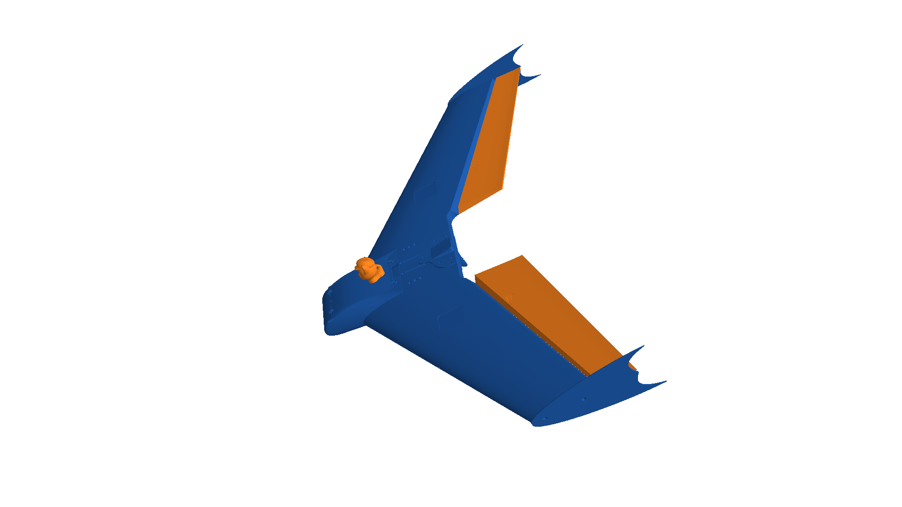
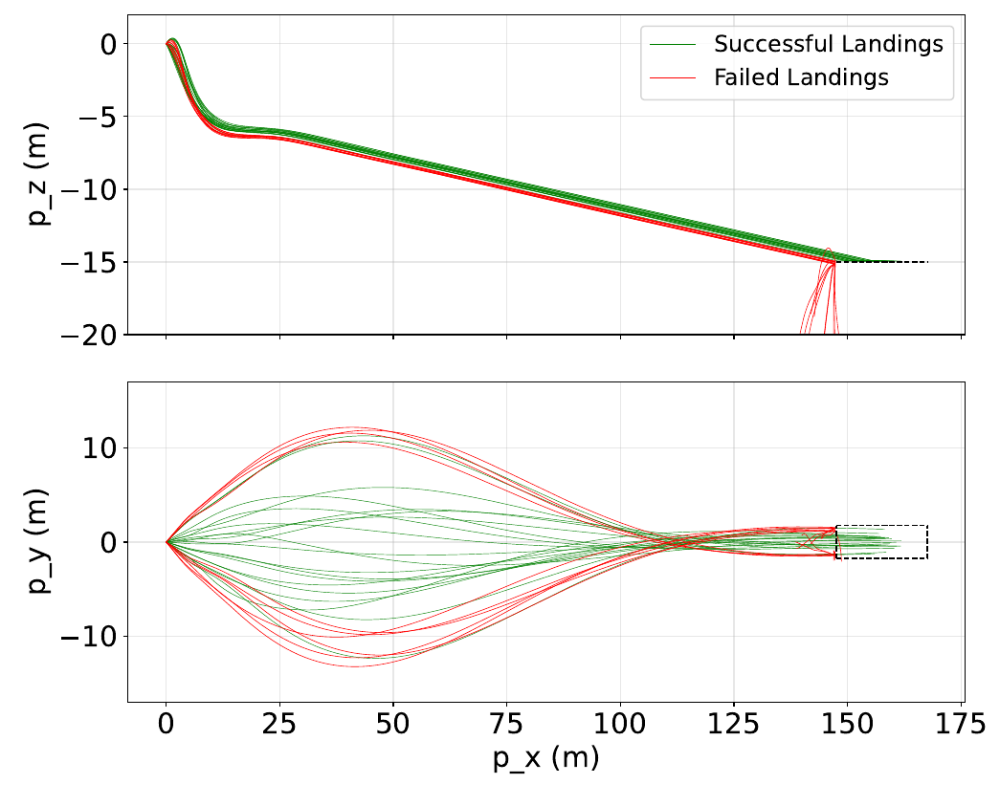
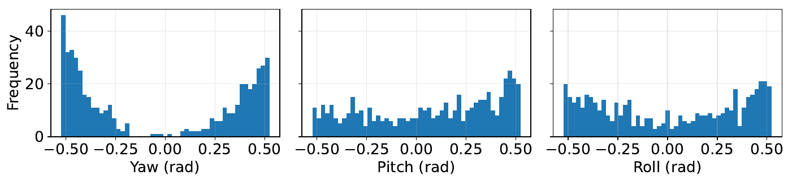

05 / Flight dynamics & control / Evaluated in simulation
AE353 · Two-person team project
Landing an unpowered flying wing with an LQR elevon controller
An unpowered flying wing has to reach the runway using only its two elevons. With Navid Navidzadeh, I worked from the supplied nonlinear dynamics to find a feasible glide equilibrium, build an LQR controller, and test whether it could land reliably across varying initial conditions. The resulting 87.3% success rate exceeded the project requirement; studying the misses explained where the design stopped working.
- Team contribution
- Controller modeling, design, implementation, and evaluation reported jointly with Navid Navidzadeh
- Tools
- LQR · Aircraft trim · State-space modeling · Python / SymPy
- Outcome
- 87.3% landing success across 4,000 simulated trials

Find an equilibrium that an unpowered aircraft can sustain
The first design obstacle was that a gliding aircraft must keep moving and descending. Requiring every position coordinate to remain constant would make the trim problem inappropriate for unpowered flight. Our team therefore omitted forward and vertical position from the ten-state trim model while retaining the variables that govern the aircraft dynamics.
A numerical least-squares search found an equilibrium with elevon deflections inside the permitted range. Jacobians at that operating point produced the linear model; a full-rank controllability check established that the two elevon inputs could influence all ten modeled states.
Balance attitude correction against elevon motion
We computed the LQR feedback gain from state and input penalties, then adjusted those weights in simulation. Larger attitude penalties emphasized pitch and roll correction, while larger input penalties produced smoother, slower elevon responses. Closed-loop eigenvalues checked local stability before the controller was evaluated in the nonlinear simulator.
Tuning was an implementation bottleneck: simulations were expensive, and small trial sets produced highly variable landing percentages. Repeated testing was needed to judge a weight change by landing outcomes rather than by one visually convincing approach.
Measure success and explain the misses
87.3% successful landings over 4,000 randomized trials exceeded the greater-than-85% requirement.
The evaluation began 150 m before and 15 m above the runway, with randomized initial airspeeds and small air disturbances. The controller issued right and left elevon commands throughout each approach, and the trial loop classified the landing and recorded position and attitude histories.
Successful approaches damped attitude oscillations and reached the runway. Failed paths commonly undershot or drifted laterally; their initial-attitude distributions implicated larger yaw and pitch offsets. The report also identifies trim selection and the physical limits of unpowered flight as possible contributors, rather than assigning every failure to a proven single cause.




What the work demonstrates
This study connects aircraft modeling to an implemented control law and a quantitative acceptance test. The useful result is both the landing percentage and the analysis that bounds it: local linear stability did not guarantee recovery from every randomized starting attitude.
The linked team notebooks expose the trim search, symbolic linearization, Riccati-equation solution, Controller class, and trial analysis. Together with the report, they show experience making a workable feedback design, tuning it against a task-level requirement, and using failed runs to assess its operating limits.